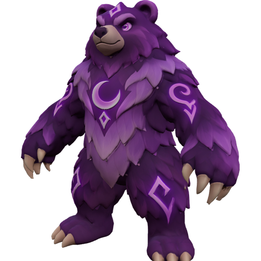
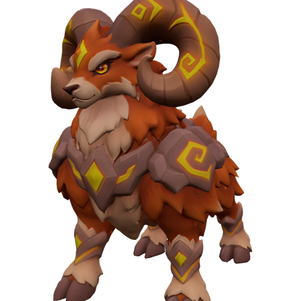

GökyolcuSezon 1 · Gök Kapısı
Kupa1 240
UstalıkSv. 23
Efsaneler kaynaşır · Kut senin elinde
Çevrimiçi hayalet havuzu bağlıGüç satılmaz · bütün kahramanlar herkese açık



Dağ Koçu Sv.2 · yeni çerçeve açıldı